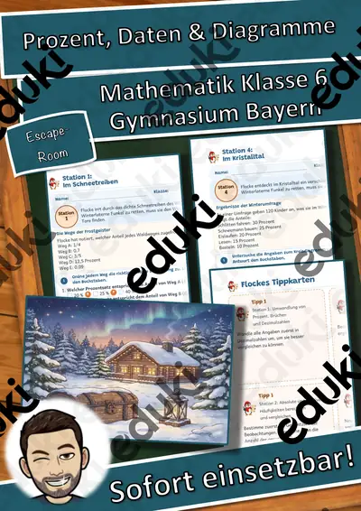
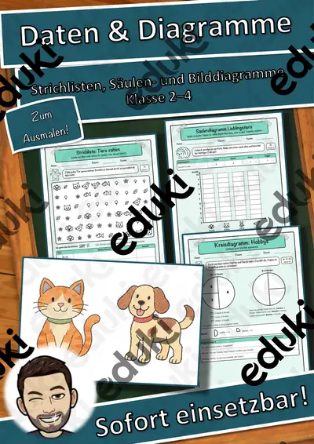
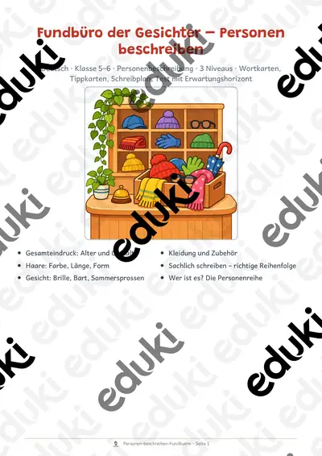

Datenflussdiagramme zeichnen und lesen – Arbeitsheft mit Lösungen (IT 6/7, Realschule Bayern)
Ein Datenflussdiagramm zeigt, wie Daten durch eine Anwendung fließen: Was geht hinein, was wird verarbeitet, was kommt heraus und wo werden Daten abgelegt? Die Lernenden unterscheiden Eingabe- und Ausgabedaten, beschreiben Funktionen, lesen und schreiben Datenflüsse zu Datenspeichern, verketten Funktionen, entwickeln ein Diagramm aus einem Text, fassen ein Diagramm in Worte und finden Fehler.
Für das Fach Informationstechnologie (IT), Jahrgangsstufe 6/7, an der Realschule in Bayern.
Enthalten (13 Seiten): Lehrerinfo mit Einsatzhinweisen · 9 Arbeitsblätter, u. a. Daten fließen; Funktionen; Eingabe oder Ausgabe?; Datenspeicher; Funktionen verketten; Ein Diagramm aus Text entwickeln; Ein Diagramm in Worte fassen · Lernzielkontrolle · Lösungen zu allen Blättern.
Einsatz: Übung und Vertiefung im Unterricht, als Hausaufgabe, zur Wiederholung oder in Vertretungsstunden. Zum Ausdrucken und Kopieren. Alle Namen, Betriebe und Beträge in den Aufgaben sind erfunden.
Texte KI-gestützt und vom Autor geprüft.
Ähnliche Materialien

Escape Room Prozent, Daten & Diagramme – Mathematik Klasse 6 Gymnasium: 6 Stationen, 2 Schlösser

Daten & Diagramme zum Ausmalen – Strichlisten, Säulendiagramme Kl. 2–4

Lesespur: Das Porträt: Gesichter zeichnen und verstehen – Lesespurgeschichte mit Rätseln (Klasse 7)

Fundbüro der Gesichter: Personen beschreiben und Suchmeldungen schreiben – Deutsch Klasse 5–6

Diagramme aus Tabellen erzeugen – Arbeitsheft mit Lösungen (IT 6/7, Realschule Bayern)

Bemaßung nach Norm – Technisches Zeichnen Klasse 8/9 Mittelschule – Arbeitsheft mit Lösungen

Würfelkunst Winter – Tannenbaum-Muster erwürfeln und zeichnen, 3-fach differenziert (Klasse 2–4)